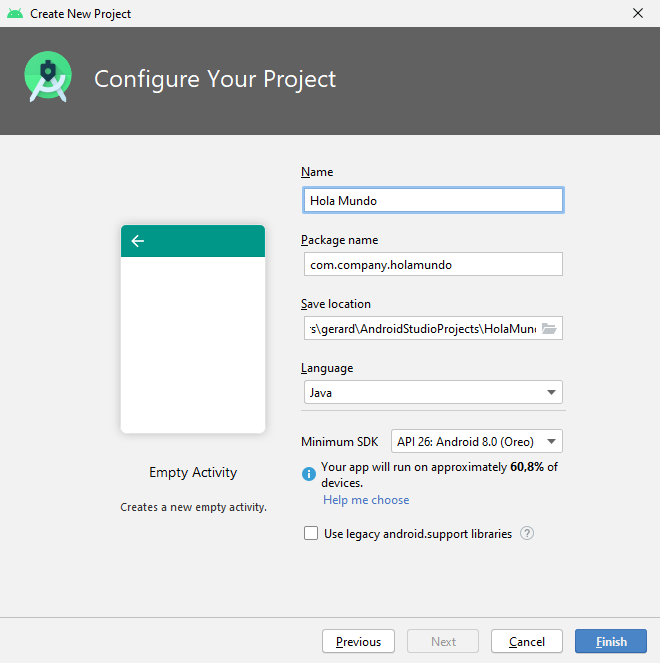
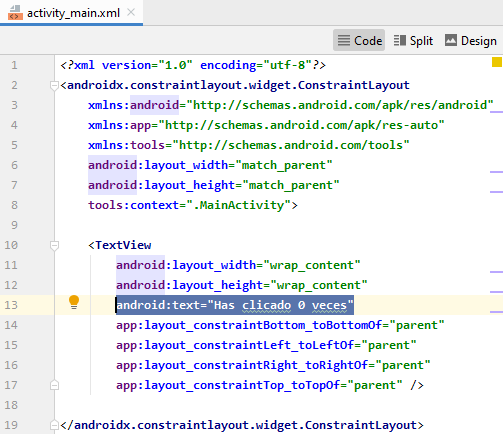
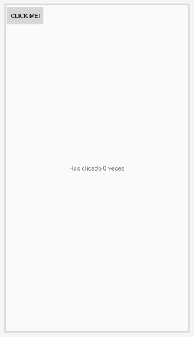
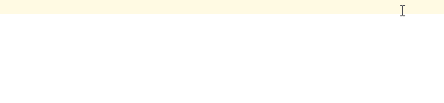

Esta práctica te enseña cómo crear tu primera aplicación para Android. Aprenderás cómo crear un proyecto de Android con Android Studio, y ejecutar una versión depurable de la aplicación.
Desarrollaremos una App que consiste en un contador de clics:
Antes de comenzar, descarga e instala Android Studio
Descomprime el zip y ejecuta el lanzador studio.sh
- En Android Studio, crea un nuevo proyecto:
- Si todavía no has abierto un proyecto, en la pantalla de bienvenida, haz clic en
Nuevo proyecto.
- Si has abierto un proyecto, ve a
File>New>New project.
- Elije la plantilla para la
Activity(pantalla) principal de la App. Para esta práctica elije "Basic Activity".

- Rellena los campos de la pantalla.

El proyecto creado es una aplicación básica de "Hello World" que contiene algunos archivos por defecto. Veamos los más importantes:

El archivo de manifiesto describe las características fundamentales de la aplicación y define cada uno de sus componentes. Aquí especificaremos las Activities que tiene nuestra app y los permisos que requiere (Cámara, Contactos, Internet, etc.) |
Contiene la definición de clase para la Activity (pantalla) principal. En este fichero programaremos el comportamiento de esta Activity. |
Este archivo XML define el layout de la actividad, es decir los elementos (widgets) que tiene la pantalla. Por defecto, contiene un elemento |
Android Studio utiliza Gradle para compilar y construir la aplicación. Hay un archivo
Más adelante usaremos este fichero para instalar nuevas bibliotecas y componentes para nuestra App, en el apartado |
Veamos también los subdirectorios
Directorio de imágenes.
Directorio para los archivos que definen la interfaz de usuario de la aplicación, como
Contiene los iconos Lanzadores.
Directorio para otros archivos XML que contienen una colección de recursos. En el archivo En el archivo En el archivo |
Este es el aspecto de la App "Hello World":

Ejecutar en un dispositivo real
Configurar el móvil de la siguiente manera:
- Conectar el dispositivo a su equipo de desarrollo con un cable USB.
- Habilitar la depuración USB en el dispositivo móvil, yendo a
Ajustes>Opciones de desarrollador.
Ejecutar la aplicación desde Android Studio de la siguiente manera:
- Selecciona el dispositivo móvil

- Haz clic en Ejecutar
 desde la barra de herramientas.
desde la barra de herramientas.
Android Studio instala la aplicación en el dispositivo conectado y la inicia.
Ejecutar en el emulador
Selecciona el emulador y haz clic en

Si no tienes ningún emulador creado ve a AVD Manager y crea uno:


Selecciona el Hardware y la versión de Android que desees.
En los ficheros XML de la carpeta res/layout se define la disposición de widgets de las pantallas.
Por el momento, en la pantalla activity_main.xml solamente hay un TextView que muestra el texto "Hello world".
Para editar los ficheros de layout hay dos formas:
- Modo gráfico: permite arrastrar los widgets de la paleta a la pantalla, y modificar sus atributos.
- Modo código: permite modificar directamente el código XML.
Habitualmente, trabajaremos en modo código:
- Haz doble click sobre el fichero
res/layout/activity_main.xml - Haz click en el icono
 (o también Split...)
(o también Split...)

Modificaremos el layout de la siguiente forma:
- El TextView que actualmente contiene el texto "Hello World", lo usaremos para mostrar el contador
- Añadiremos un botón que, al ser pulsado, aumentará el contador
TextView
Para cambiar el texto de un TextView, hay que modificar el atributo android:text.
Cambia el valor de este atributo al texto "Has clicado 0 veces"

Button
Añade también el Button que augmentará el contador:
<Button
android:layout_width="wrap_content"
android:layout_height="wrap_content"
android:text="Click me!"/>
ConstraintLayout
En el diseño actual del layout podemos ver que la disposición del botón no es la más adecuada:

Quizá quedaría mejor si el botón estuviera dispuesto debajo del TextView...
Para disponer los elementos en un ConstraintLayout hay que definir las constraints en cada elemento.
Podemos ver las constraints como muelles que tiran de un elemento en las cuatro direcciones (arriba, abajo, izquierda y derecha). El elemento queda posicionado en equilibrio entre las fuerzas de los muelles que se han definido.
En el caso del TextView vemos que hay definidas cuatro constraints:

En cada constraint se indica hacia dónde debe tirar el "muelle". Podemos ver vemos que:
- La
constraintBottomtira del TextView hacia la parte inferior (toBottomOf) de suparent(su elemento padre es el ConstraintLayout). - La
constraintLeft(muelle de la izquierda) tira del TextView hacia la parte izquierda (toLeftOf) de su parent. - La
constraintRighttira del TextViewtoRightOfparent. - La
constraintToptira de éltoTopOfparent.

Definiremos las constraints del Button para posicionarlo de esta manera:

La constraintBottom del botón tira de él hacia la parte inferior de su padre (el ConstraintLayout).
La constraintLeft hacia la parte izquierda de su padre.
La constraintRight hacia la parte derecha de su padre.
Hasta aquí la cosa es sencilla. Basta definir las constraints igual que en el TextView. Estas constraints apuntan todas al elemento padre:

En la constraintTop la cosa cambia. Podemos ver que la constraintTop tira del botón hacia la parte inferior del TextView.
Para hacer referencia al elemento padre hemos visto que podemos usar parent. Pero ¿cómo hacemos referencia al TextView? Para ello hay que asignarle un identificador al TextView.
Para asignar un identificador a un elemento hay que usar el atributo android:id, y en el valor hay que poner @+id/ antes del identificador que queramos asignarle. Para asignar el identificador "contadorDeClics" al TextView añadiremos pues el atributo android:id="@+id/contadorDeClics".
<TextView
android:id="@+id/contadorDeClics"
android:layout_width="wrap_content"
android:layout_height="wrap_content"
android:text="Has clicado 0 veces"
app:layout_constraintBottom_toBottomOf="parent"
app:layout_constraintLeft_toLeftOf="parent"
app:layout_constraintRight_toRightOf="parent"
app:layout_constraintTop_toTopOf="parent" />
Ahora ya podemos añadir la constraintTop al botón y decirle que apunte hacia la parte inferior del TextView:
<Button
android:id="@+id/augmentarElContador"
android:layout_width="wrap_content"
android:layout_height="wrap_content"
android:text="Click me!"
app:layout_constraintBottom_toBottomOf="parent"
app:layout_constraintLeft_toLeftOf="parent"
app:layout_constraintRight_toRightOf="parent"
app:layout_constraintTop_toBottomOf="@+id/contadorDeClics"/>Si ejecutas la app, verás el texto y el botón. Sin embargo, cuando clicas en el botón, este no hace nada. No se ha definido el comportamiento de dicho botón.
Para agregar un comportamiento al botón debemos realizarlo en el código Java (o también Kotlin). Escribiremos el código en el fichero MainActivity.java.

En este fichero hay definida la clase MainActivity, y en ella el método onCreate.
Este método onCreate es el que el sistema android ejecuta en primer lugar cuando se inicia nuestra App.
En este método lo primero que debes observar es la llamada setContentView(R.layout.activity_main). Esta llamada establece el layout activity_main.xml, es decir, lo que se mostrará en pantalla es lo que hemos puesto en este fichero de layout (el TextView y el Button).
Una vez visto esto vayamos al código necesario para nuestro contador. Necesitaremos:
- Una variable
intque vaya almacenando el contador - Programar el Button para que, cada vez que se haga click, augmente el contador y actualice el TextView
Crear la variable para almacenar el número de clicks es la parte más sencilla:
public class MainActivity extends AppCompatActivity {
int contador;
@Override
protected void onCreate(Bundle savedInstanceState) {
super.onCreate(savedInstanceState);
setContentView(R.layout.activity_main);
}
}findViewById
Para programar el comportamiento del Button, y luego actualizar el texto del TextView, necesitaremos tener una referencia a estos dos elementos.
Para ello definiremos una variable para cada elemento y llamaremos al método findViewById() para vincular estas variables con los elementos del layout correspondientes. Al método findViewById() hay que pasarle el identificador que hayamos definido en el fichero XML.
public class MainActivity extends AppCompatActivity {
int contador;
TextView contadorDeClics;
Button augmentarElContador;
@Override
protected void onCreate(Bundle savedInstanceState) {
super.onCreate(savedInstanceState);
setContentView(R.layout.activity_main);
contadorDeClics = findViewById(R.id.contadorDeClics);
augmentarElContador = findViewById(R.id.augmentarElContador);
}
}Opcionalmente, se puede activar el ViewBinding para no tener que hacer las llamadas a findViewById para vincular los elementos del XML con las variables JAVA.
Imagina que en lugar de 1 botón y 1 textview, tenemos 10 botones y 5 textviews... són 15 variables y 15 llamadas a findViewById !!
Para activar el ViewBinding hay que ir al fichero build.gradle (Module: app) y añadir la siguiente configuración:
android {
. . .
viewBinding {
enabled = true
}
}
Luego hay que definir una única variable y a partir de ésta podremos acceder a los elementos XML. También hay que modificar la llamada a setContentView, de la siguiente manera:
public class MainActivity extends AppCompatActivity {
ActivityMainBinding binding;
@Override
protected void onCreate(Bundle savedInstanceState) {
super.onCreate(savedInstanceState);
// setContentView(R.layout.activity_main);
binding = ActivityMainBinding.inflate(getLayoutInflater());
setContentView(binding.getRoot());
}
}De esta forma, para acceder al Button y al TextView (y los otros elementos que tuviésemos) podemos hacerlo directamente a través de la variable binding y el identificador de los elementos, así:
binding.contadorDeClics
binding.augmentarElContador
OnClickListener
Un vez tenemos vinculados el Button y el TextView, el siguiente paso es programar el botón para que responda al CLICK (aumentando el contador y mostrando el texto en el TextView).
Para que el boton responda al evento CLICK, hay que hacer una llamada al método setOnClickListener y pasarle un objeto de clase View.OnClickListener. En el método onClick de este objeto programaremos lo que queremos que se haga cuando se pulse el botón:
public class MainActivity extends AppCompatActivity {
int contador;
TextView contadorDeClics;
Button augmentarElContador;
@Override
protected void onCreate(Bundle savedInstanceState) {
super.onCreate(savedInstanceState);
setContentView(R.layout.activity_main);
contadorDeClics = findViewById(R.id.contadorDeClics);
augmentarElContador = findViewById(R.id.augmentarElContador);
augmentarElContador.setOnClickListener(new View.OnClickListener() {
@Override
public void onClick(View view) {
// aumentar el contador
// mostrar el contador en el TextView
}
});
}
}
Ahora, dentro del método onClick del listener, solo hay que incrementar el contador y cambiar el texto del TextView.
Para cambiar el texto hacemos una llamada al método setText() del TextView.
Finalmente, el código de la aplicación queda así:
public class MainActivity extends AppCompatActivity {
int contador;
TextView contadorDeClics;
Button augmentarElContador;
@Override
protected void onCreate(Bundle savedInstanceState) {
super.onCreate(savedInstanceState);
setContentView(R.layout.activity_main);
contadorDeClics = findViewById(R.id.contadorDeClics);
augmentarElContador = findViewById(R.id.augmentarElContador);
augmentarElContador.setOnClickListener(new View.OnClickListener() {
@Override
public void onClick(View view) {
contador++;
contadorDeClics.setText("Has clicado " + contador + " veces");
}
});
}
}Si has usado ViewBinding, el código quedaría así:
public class MainActivity extends AppCompatActivity {
int contador;
ActivityMainBinding binding;
@Override
protected void onCreate(Bundle savedInstanceState) {
super.onCreate(savedInstanceState);
binding = ActivityMainBinding.inflate(getLayoutInflater());
setContentView(binding.getRoot());
binding.augmentarElContador.setOnClickListener(new View.OnClickListener() {
@Override
public void onClick(View view) {
contador++;
binding.contadorDeClics.setText("Has clicado " + contador + " veces");
}
});
}
}